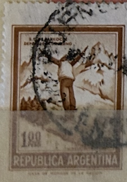
| SOURCE | TITLE| IMAGE MATCH | click to source page |
| sellosmundo.com | Sello: San Carlos de Bariloche / Deportes de Invierno 1,00 peso de Argentina America | 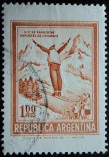 |
| Colnect | Stamp: Winter sports in Bariloche - No wmk (Argentina(Personalities and Landscapes - New currency) Mi:AR 1099X,Sn:AR 938,Yt:AR 887A,Sg:AR 1316a,Gz :AR 1085,Göt:AR 1535A 📮 | 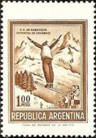 |
| eBay | ARGENTINA 938 - Ski Jumper "1971 Brown" (pf83308) | eBay | 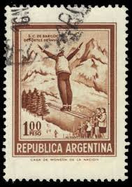 |
| eBay | 56436b - ARGENTINA - POSTAL HISTORY: SKIING - STAMP with perforation error ! | eBay | 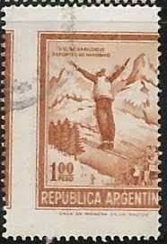 |
| sellosmundo.com | S.C Bariloche.Winter sports. Argentina America ref. 335490 | 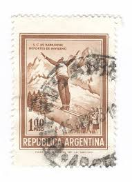 |
| HipStamp | Argentina #938 1p Ski Jumper | Central & South America - Argentina, General Issue Stamp / HipStamp | 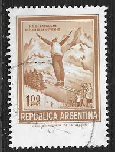 |
| 123RF | ARGENTINA - CIRCA 1977: A Stamp Printed In The Argentina Shows Jet, 50th Anniversary Of Military Plane Production, Circa 1977 Stock Photo, Picture and Royalty Free Image. Image 29058035. | 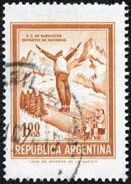 |
| Mercado Libre | Estampillas | MercadoLibre | 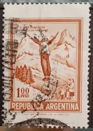 |
| Alamy | ARGENTINA - CIRCA 1971: Postage stamp printed in Argentina, shows sunflower, circa 1971 Stock Photo - Alamy | 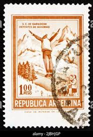 |
| skisprungschanzen.com | San Carlos de Bariloche » Ski Jumping Hill Archive » skisprungschanzen.com | 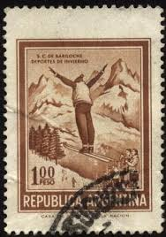 |
| Alamy | MOSCOW, RUSSIA - MARCH 13, 2022: Postage stamp printed in Argentina shows Bariloche - Ski Jumper, Personalities and Landscapes serie, circa 1971 Stock Photo - Alamy | 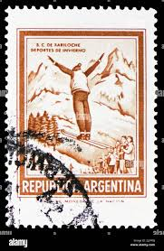 |
| Shutterstock | Argentina Circa 1961 Stamp Printed Argentina Foto de stock 109523723 | Shutterstock | 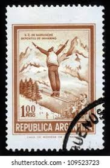 |
| Valen (valent66) - Profile | Pinterest | 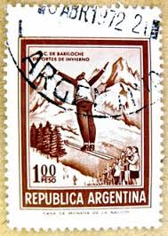 | |
| Todocolección | 1974 - argentina - bariloche deportes de invier - Buy Antique stamps of Argentina on todocoleccion | 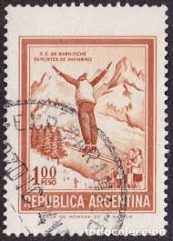 |
| Shutterstock | Argentina Circa 1971 Stamp Printed Argentina Stock Photo 117799495 | Shutterstock | 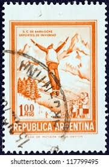 |
| ebid.net | RHODESIA 1973 SG 485 - fine used (o) on eBid United States | 231783855 | 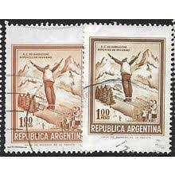 |
| protofilia.it | Carrello – Pagina 4 – www.protofilia.it | 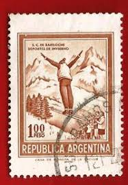 |
| vividagallery.com | Argentina San Carlos Bariloche Ski Jumper Winter Sports Andes Patagonia Orange Postage Stamp T-Shirt by Vivida Gallery - Vivida Gallery | 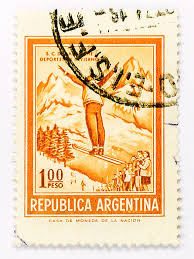 |
| Mercado Libre | Sellos América Usado | MercadoLibre.com.ar | 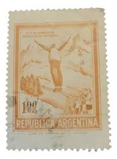 |
| Todocolección | s-00614- republica argentina. 1 peso. - Buy Antique stamps of Argentina on todocoleccion | 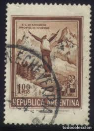 |
| pixers.co.nz | Wall Mural Samuel P. Langley and his Aerodrome No. 5 machine (USA 1988) - PIXERS.CO.NZ | 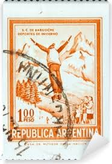 |
| Todocolección | sello usado republica argentina bariloche depo - Compra venta en todocoleccion | 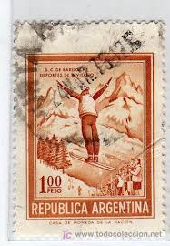 |
| sooluciones.com | Sello Argentina 2014 Repatriación científicos - Catálogo de colección personal — Sellos para compartir o intercambiar | 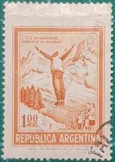 |
| sellosmundo.com | Sello: S.C. de Bariloche Deportes de Invierno 100 pesos de Argentina America | 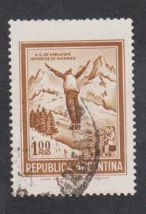 |
| Mercado Libre | Estampillas Del Sesquicentenario De La | MercadoLibre 📦 | 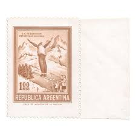 |
| Todocolección | sello usado argentina bariloche deportes de inv - Acquista Francobolli antichi di Argentina su todocoleccion | 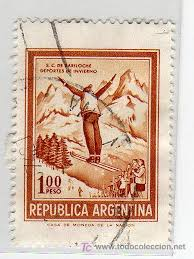 |
| eBay | ARGENTINA 938i - Ski Jumper "1971 Chestnut Brown" (pf21939) | eBay | 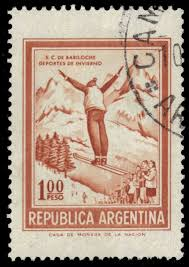 |
| Mercado Libre | Estampilla Premio Nobel De Quimica | MercadoLibre 📦 | 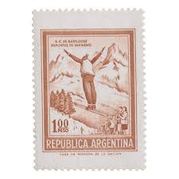 |
| Lamas Bolaño | SELLOS DE ARGENTINA 1971 - DEPORTES DE INVIERNO S.C. DE BARILOCHE - 1 VALOR - CORREO | 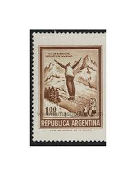 |
| Todocolección | argentina. 1971. deportes. saltos de ski - Buy Antique stamps of Argentina on todocoleccion | 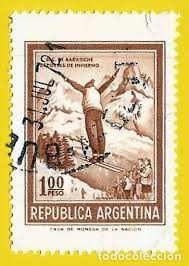 |
| Todocolección | s-02303- republica argentina. - Buy Antique stamps of Argentina on todocoleccion | 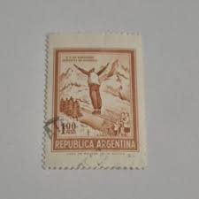 |
| Todocolección | argentina,1918-19,san martín,sin filigrana,5 va - Buy Antique stamps of Argentina on todocoleccion | 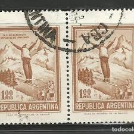 |
| Dopamine Content | 2 Pegatinas De Vinilo Chamonix De 10 Cm/100 Mm, Para Esquí, Snowboard | 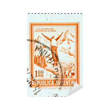 |
| Mercado Libre | Estampilla Florentino Ameghino | MercadoLibre 📦 | 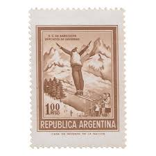 |
| Dreamstime.com | Carimbo De Correio Cancelado Impresso Pela Argentina Que Mostra Salto De Esqui Fotografia Editorial - Imagem de papel, passatempo: 224561917 | 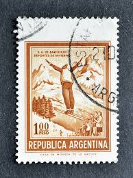 |
| eBay | Argentina Stamp, Scott 938 MLH | eBay | 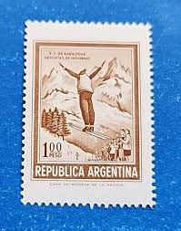 |
| Todocolección | argentina 3 c. mariano moreno año 1946. - Buy Antique stamps of Argentina on todocoleccion | 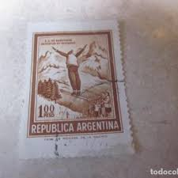 |
| Galéria Savaria | Eladó argentina - Gyűjtemény - Bélyeg - Eladó és eladott termékek | Galéria Savaria online piactér - Vásároljon vagy hirdessen megbízható, színvonalas felületen! | 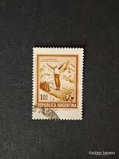 |
| Bund Deutscher Philatelisten e.V. (BDPh) | Zähnungsarten - BDPh-Diskussions-Forum - Briefmarkenforum | 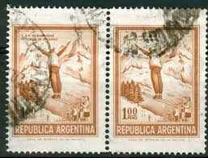 |
| subastasweb.com | ARGENTINA 1974 (MT973) BARILOCHE TAMAÑO CHICO, USADA a $250.00 en Subastas Web | 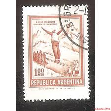 |
| Todocolección | hungria 1978 - fútbol - copa mundial de la fifa - Buy Stamps about sports on todocoleccion | 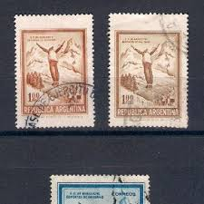 |
| Filatelia Argüello | VARIETY: DOUBLE HORIZONTAL PERFORATION – Filatelia Argüello | 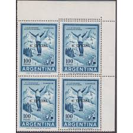 |
| HipStamp | Argentina 704 Ski Jumper 1961 | Central & South America - Argentina, General Issue Stamp / HipStamp | 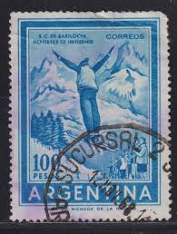 |
| eBay | ARGENTINA SKI Yv# 606 Ea Block of 4 Mate Nacional | eBay | 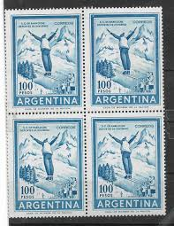 |
| sellosmundo.com | S.C. . Argentina America ref. 253891 | 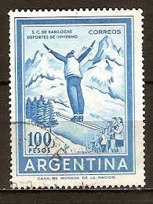 |
| Todocolección | austria 1970 atletismo, vallas 1 sello - Buy Stamps about sports on todocoleccion | 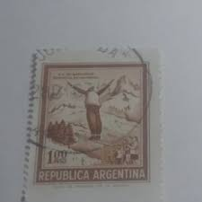 |
| eBay | Argentina Postage Stamp Ski Jump Blue And White Fantastic Ski Stamp From... | eBay | 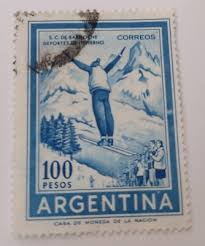 |
| Stamp Auction Network | Philatino - Guillermo Jalil Sale - 1947 Page 37 | 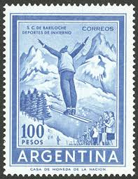 |
| DealBid | Recently Listed Listings in Stamps > Latin America > Argentina - 40 items per page - Recently Listed | DealBid | 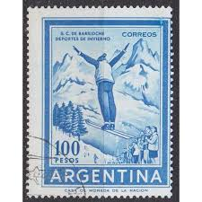 |
| lbdphilately.com | Products | |
| Alamy | Argentina argentine postage stamp stamp hi-res stock photography and images - Page 3 - Alamy | |
| CollectorBazar | a2zKollection ~ Argentina Nation's Currency 100 Pesos Used Stamp # 127/K/304/SD | |
| Почтовые марки Украины | Buy 1961 Argentina Stamp (Winter sports in Bariloche) Used №770 | |
| eBay | Argentina, Scott #892, 100p Ski Jumper, MNH | eBay | |
| Alamy | Postage stamp argentina hi-res stock photography and images - Page 9 - Alamy | |
| eBay | ARGENTINA, MI # 770, BLOCK OF 4, DOUBLE PRINTING, MNH | eBay | |
| HipStamp | Argentina 1974 Sieger # I UPU CENTENARY-PRENFIL'74 Souvenir Sheet Perforated MNH | Central & South America - Argentina, General Issue Stamp / HipStamp | |
| eBay | PARAGUAY 1971 Block 171 Winter Olympics Olympia 1972 Sapporo Downhill Skiing ** | eBay | |
| skisprungschanzen.com | San Carlos de Bariloche » Skisprungschanzen-Archiv » skisprungschanzen.com |